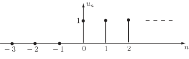

Long description: zfig5

Alt text: A graph showing discrete vertical lines of height one above the values n = 0, n = 1, and n = 2 on the horizontal axis.
This description was generated by AI and has not been verified by a human. If you spot an error, please use the feedback link below.
- The image displays a graph with a horizontal axis labeled with integer values, \(n\), ranging from at least negative three to positive two.
- A vertical axis labeled \(u_n\) indicates the magnitude of the values.
- Three distinct, upright vertical lines are drawn, each representing a non-zero value at a specific integer location on the horizontal axis.
- The first vertical line is located at \(n=0\) and has a height of one.
- The second vertical line is located at \(n=1\) and also has a height of one.
- The third vertical line is located at \(n=2\) and also has a height of one.
- For all other integer values of \(n\) shown on the axis (specifically \(n=-3, n=-2, n=-1\), and for \(n>2\)), no vertical line is present, implying a value of zero for \(u_n\).